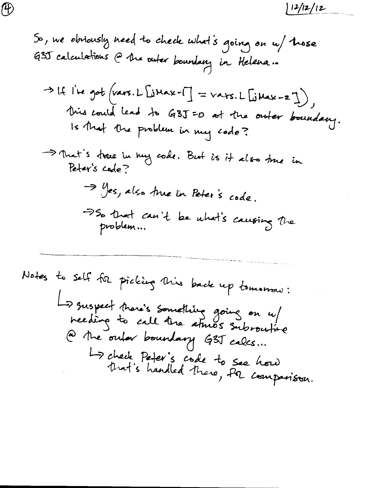

Date & Time: Dec. 12, 2012
Location: Campus
Computing context: /Desktop/Research/CppHenyeyCode, /Desktop/Research/BodenheimerCode/UnalteredCode/
From last time:
Figure out why the dX profiles agree when dTime = 0, but not when dTime > 0.
Ways of doing this:
See which discrepancies arise when I run both codes with dTime \approx 1e7 seconds (rather than 1e9 seconds)
See how the discrepancies grow with/depend on dTime.
Result: See Figure 2 below.
Compare how Helena and Peter's code are handling the P_old and T_old values (I suspect this is the main thing that's causing the differences)
Result: I added a set vars.old = vars.now in Helena for that initial time-step pass, and it didn't improve or change the resulting dX profiles at all.
Also looked into how Peter's code handles the CDE calculations for non-zero dTime values, and am still not entirely clear on how his approach (analytic calcs of the derivatives) should carry over to Helena's (numerical calculation of the derivs).
Check that Helena is handling the 1/dTime calculation stuff correctly in the G3J subroutine.
Result: it looks like that's working fine. Also, the dL amplitude increases w/ decreasing dTime provide evidence in favor of that working right. (I think.)
Based on the 3 results above, I think the issue lies in calculating the CDE derivs involving G3J with respect to P and T.
Switched over to pen & paper at this point. See scans of the notes below.

Today's work:
See how Peter's code handles the G3J calculations at the outer boundary.
The chunk of Peter's code that changes the quantity [L(jMax) - L(jMax-1)] happens just before the main program first calls the Henyey subroutine, and looks like this:
c call massflux(TIME,Zflux)
c if(konv.gt.0. or. MODEL.eq.1) then
c mode=999
c else
c mode=0
c call gridmov
c endif
So it's either the massflux of the gridmov subroutines that cause this change. Let's find out which it is...
It's the gridmov subroutine that's causing the change. Makes sense, b/c its job is to de/refine the mass cell size/structure to optimize the Henyey process.
There are two ways to debug this, and I'll try both next time:
Run Peter's code WITHOUT the pre-Henyey call to gridmov, and see how the CDEG and dX values it generates compare to Helena's results.
Make the starting model for Helena the 'refined' model that Peter's code uses after passing it through gridmov.